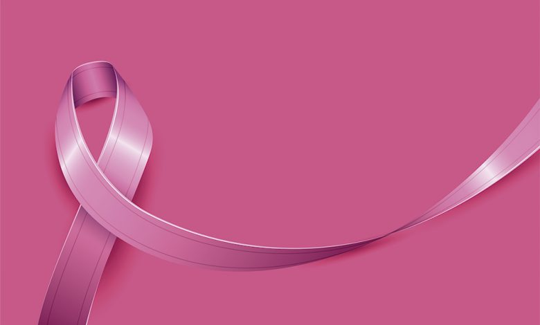

Outubro Rosa é uma campanha de conscientização sobre o câncer de mama, que acontece anualmente no mês de outubro. O movimento visa alertar a população sobre a importância do diagnóstico precoce, já que, quando identificado logo no início, o câncer de mama tem maiores chances de cura. Durante o mês, diversos monumentos e prédios ao redor do mundo são iluminados com a cor rosa, e diversas ações e eventos são promovidos para informar e mobilizar as pessoas sobre a prevenção da doença. Além disso, a campanha enfatiza a necessidade de cuidados com a saúde, como a realização de exames de rotina, como a mamografia, e o autoexame.